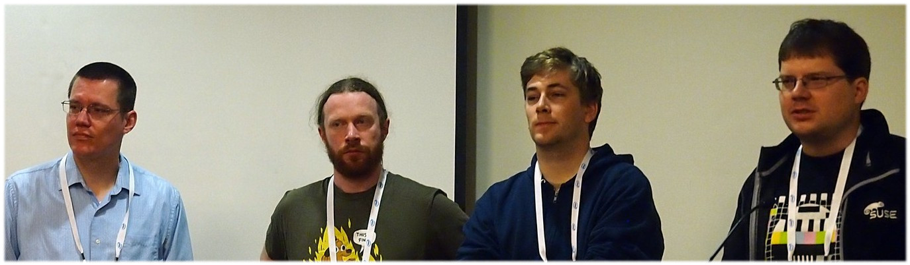

A discussion on virtual-memory topics
The half-hour session begin with self-introductions from the four developers at the head of the room. Mel Gorman, who works in the performance group at SUSE, said that his current interest is in improving small-object allocation, a task which he hopes will be relatively straightforward. Rik van Riel has spent much of his time on non-VM topics recently, but has a number of projects he wants to get back to. Those include using the persistent-memory support in QEMU to shift the page cache out of virtualized guest systems and into the host, where it can be better managed and shared. Johannes Weiner has been working on scalability issues, and is working on improving page-cache thrashing detection. Vlastimil Babka is concerned with high-order (larger than one page) allocations. With the merging of the virtually mapped kernel stacks work, stack allocation no longer requires high-order allocations, but there are other users in the kernel. So his current focus is on making the compaction and anti-fragmentation code work better.

Mel opened the discussion by asking whether anybody in the room had problems with the VM subsystem. Laura Abbott replied that she is working on slab sanitization as a way of hardening the kernel; it zeroes memory when it is freed to prevent memory leaks. The initial code came from the PaX/grsecurity patch set, but that code is not acceptable in mainline due to the performance hit it adds to the memory allocator's hot paths. She has been pursuing a suggestion to use the SLUB allocator's debug path, but there is little joy to be found there; SLUB's slow path is very slow.
Mel replied that he would expect that the performance hit from sanitization would be severe in any case; thrashing the memory caches will hurt even if nothing else does. If a particular environment cares enough about security to want sanitization, it will have to accept the performance penalty; this would not be the first time that such tradeoffs have had to be made. That said, he has no fundamental opposition to the concept. Laura does believe that the hit can be reduced, though; much of the time spent in the slow path goes to lock contention, so perhaps lockless algorithms should be considered. Mel concurred, noting that the slow path was misnamed; it should be the "glacial path."
Swap woes
The next topic was brought up by a developer who is working on next-generation memory, and swapping to hardware-compressed memory in particular. In the absence of the actual hardware, he is working on optimizing swapping to a RAM disk using zram. There are a number of problems he is running into, including out-of-memory kills while there is still memory available. But he's concerned about performance; with zram, about ⅔ of the CPU's time is spent on compression, while the other ⅓ is consumed by overhead. When the compression moves to hardware, that ⅓ will be the limiting factor, so he would like to find ways to improve it.
Johannes replied that there are a lot of things to fix in the swap path when fast devices are involved, starting with the fact that the swapout path uses global locks. Because swapping to rotational devices has always been terrible, the system is biased heavily against swapping in general. A workload can be thrashing the page cache, but the VM subsystem will still only reclaim page-cache pages and not consider swapping. He has been working on a patch set to improve the balance between swapping and the page cache; it tries to reclaim memory from whichever of the two is thrashing the least. There are also problems with the swapout path splitting huge pages on the way out, with a consequent increase in overhead. Adding batching to the swap code will hopefully help here.
Mel suggested the posting of profiles showing where the overhead is in the problematic workload. Getting representative workloads is hard for the VM developers; without those workloads, they cannot easily reproduce or address the problems. In general, he said, swapping is "running into walls" and needs to be rethought. Patience will be required, though; it could be 6-24 months before the problems are fixed.
Shrinker shenanigans
Josef Bacik is working, as he has for years, on improving the Btrfs filesystem. He has observed a problematic pattern: if the system is using vast amounts of slab memory, everything will bog down. He has workloads that can fill 80% of memory with cached inodes and dentries. The size of those caches should be regulated by the associated shrinkers, but that is not working well. Invocation of shrinkers is tied to page-cache scanning, but this workload has almost no page cache, so that scanning is not happening and the shrinkers are not told to free as much memory as they should. As more subsystems use the shrinker API, he said, we will see more cases where it is not working as desired.
Ted Ts'o said that he has seen similar problems with the extent status slab cache in the ext4 filesystem. That cache can get quite large; it can also create substantial spinlock contention when multiple shrinkers are running concurrently. The problems are not limited to Btrfs, he said.
Rik asked whether it would make sense to limit the size of these caches to some more reasonable value. There are quite a few systems out there now that do not really have a page cache, and their number will grow as the use of persistent memory spreads. Persistent memory is nice in that it can make terabytes worth of file data instantly accessible, but that leads to the storing of a lot of metadata in RAM.
Christoph Hellwig replied that blindly limiting the size of metadata caches is not a good solution; it might be a big hammer that is occasionally needed, but it should not be relied upon in a well-functioning system. What is needed is better balancing, he said, not strict limits. The VM subsystem has been built around the idea that filesystems store much of their metadata in the page cache, but most of them have shifted that metadata over to slab-allocated memory now. So, he said, there needs to be more talk between the VM and filesystem developers to work out better balancing mechanisms.
Rik answered that the only thing the VM code can do now is to call the shrinkers. Those shrinkers will work through a global list of objects and free them, but there is a problem. Slab-allocated objects are packed many to a page; all objects in a page must be freed before the page itself can be freed. So, he said, a shrinker may have to clear out a large fraction of the cache before it is able to free the first whole page. The cache is wiped out, but little memory is made available to the rest of the system.
Christoph said that shrinkers are currently designed around a one-size-fits-all model. There needs to be a way to differentiate between clean objects (which can be freed immediately) and dirty objects (that must be written back to persistent store first). There should also be page-based shrinkers that can try to find pages filled with clean objects that can be quickly freed when the need arises.
Mel suggested that there might be a place for a helper that a shrinker can call to ask for objects that are on the same page; it could then free them all together. The problem of contention for shrinker locks could be addressed by limiting the number of threads that can be running in direct reclaim at any given time. Either that, or shrinkers should back off quickly when locks are unavailable on the assumption that other shrinkers are running and will get the job done.
Ted said that page-based shrinkers could make use of a shortcut by which they could indicate that a particular object is pinned and cannot be freed. The VM subsystem would then know that the containing page cannot be freed until the object is unpinned. Jan Kara suggested that there could be use in having a least-recently-used (LRU) list for slab pages to direct reclaim efforts, but Linus Torvalds responded that such a scheme would not work well for the dentry cache, which is usually one of the largest caches in the system.
The problem is that some objects will pin others in memory; inodes are pinned by their respective dentries, and dentries can pin the dentries corresponding to their parent directories. He suggested that it might make sense to segregate the dentries for leaves (ordinary files and such) from those for directories. Leaf dentries are much easier to free, so keeping them together will increase the chances of freeing entire pages. There's just one little problem: the kernel often doesn't know which type a dentry will be when it is allocated, so there is no way to know where to allocate it. There are places where heuristics might help, but it is not an easy problem. Mel suggested that the filesystem code could simply allocate another dentry and copy the data when it guesses wrong; Linus said that was probably doable.
Some final details
Linus said that there is possible trouble coming with the merging of slab caches in the SLUB allocator. SLUB normally does that merging for objects of similar size, but many developers don't like it. Slab merging would also obviously complicate the task of freeing entire pages. That merging currently doesn't happen when there is a shrinker associated with a cache, but that could change in the future; disabling merging increases the memory footprint considerably. We need to be able to do merging, he said, but perhaps need to be more intelligent about how it is done.
Tim Chen talked briefly about his swap optimization work. In particular, he is focused on direct access to swap when persistent memory is used as the swap device. Since persistent memory is directly addressable, the kernel can map swapped pages into a process's address space, avoiding the need to swap them back into RAM. There will be a performance penalty if the pages are accessed frequently, though, so some sort of decision needs to be made on when a page should be swapped back in. Regular RAM has the LRU lists to help with this kind of decision, but all that is available for persistent memory is the "accessed" bit in the page-table entry.
Johannes pointed out that the NUMA code has a page-table scanner that uses the accessed bit; perhaps swap could do something similar, but Rik said that this mechanism is too coarse for swap use. Instead, he said, perhaps the kernel could use the system's performance-monitoring unit (PMU) to detect situations where pages in persistent memory are being accessed too often. The problem with that approach, Andi Kleen pointed out, is that developers generally want the PMU to be available for performance work; they aren't happy when the kernel grabs the PMU for its own use. So it's not clear what form the solution to this problem will take.
All of the above was discussed in a mere 30 minutes. Mel closed the
session by thanking the attendees, noting that some good information had
been shared and that there appeared to be some low-hanging fruit that could
be addressed in the near future.
| Index entries for this article | |
|---|---|
| Kernel | Memory management/Conference sessions |
| Conference | Kernel Summit/2016 |
Posted Nov 11, 2016 0:44 UTC (Fri)
by JanC_ (subscriber, #34940)
[Link] (1 responses)
> Mel replied that he would expect that the performance hit from sanitization
Isn't it possible to zero memory without using the CPU? At least on some architectures? Maybe using DMA or the memory controller or something like that?
Posted Nov 11, 2016 19:31 UTC (Fri)
by excors (subscriber, #95769)
[Link]
I think DMA is usually not cache-coherent with the CPUs, so you'd have to flush the relevant lines from the CPU cache before zeroing the RAM. That will have some cost even if the cache is empty (I think many architectures require one flush instruction per cache line, you can't pass them an arbitrary range), and if the whole range is dirty in the cache then you'll end up doing twice as many writes to RAM (wasting bandwidth and power). Then if you immediately reallocate and reuse that range, it won't be in the cache and you'll have the extra cost of reading it all back from RAM.
The overhead of sending control messages to the DMA engine and waiting for completion might be significant if you're only processing 4KB pages. Larger DMA transactions should reduce the overhead, but might not be possible if RAM is very fragmented. There's also a risk of contention with other users of the DMA hardware, which might be copying huge chunks of memory that won't finish any time soon.
On some systems a single CPU core is able to saturate the memory bandwidth by itself, so DMA might not complete faster anyway.
And if you want to avoid cache pollution, some CPUs have non-temporal stores that will avoid pulling lines into the cache unnecessarily but will still guarantee cache consistency, which might be a reasonable approach here.
A discussion on virtual-memory topics
> hardening the kernel; it zeroes memory when it is freed to prevent memory
> leaks.
> would be severe in any case; thrashing the memory caches will hurt even if
> nothing else does.
A discussion on virtual-memory topics